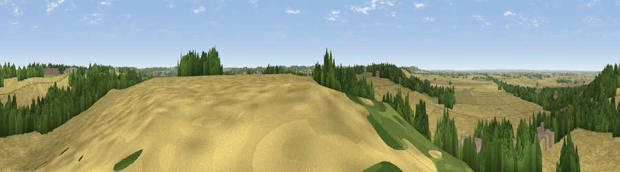

Viewpoint near Barrowby
#19625 in England · top 16% of its area beats it · near BarrowbyThe view, rendered

A 360° render of this exact spot computed from the terrain model, tree cover and land cover — summer colours, afternoon light, calibrated against photographs of famous viewpoints. Real trees, hedges and buildings will differ in detail.
The panorama
Grey silhouette: terrain skyline in each direction (720 bearings, Earth curvature and refraction included). Dashed green: skyline with trees (+15 m) and buildings (+8 m) as obstacles. Blue strip: how far the ground is visible on each bearing.
Where the view opens
Wedge length = distance to the farthest visible ground on that bearing (vegetation-aware). Rings at 10, 25 and 50 km.
What fills the view
60% cropland · 21% woodland · 11% grassland · 7% built-up
Angular shares of the visible panorama (visual magnitude), not map area. Landscape diversity 0.47 (0–1 Shannon).
Key numbers
More beautiful places nearby
The staircase of upgrades: each row has a higher view potential than everything closer. Driving times are estimates from straight-line distance, calibrated against real road routing — check an actual route before setting out.
| Place | Direction | Drive | Score |
|---|---|---|---|
| Viewpoint near Great Gonerby | N · 1 km | ~3 min | 59.8 |
| Viewpoint near Great Gonerby | NNE · 2 km | ~6 min | 62.0 |
| Viewpoint near Belvoir | WSW · 8 km | ~16 min | 70.8 |
| Broombriggs Hill | WSW · 44 km | ~64 min | 74.4 |
| Viewpoint near Woodhouse Eaves | WSW · 44 km | ~64 min | 77.7 |
| Viewpoint near Mow Cop | WNW · 105 km | ~129 min | 78.9 |
| Viewpoint near Mow Cop | WNW · 105 km | ~129 min | 80.2 |
| Viewpoint near Little Wenlock | WSW · 128 km | ~153 min | 84.2 |
52.92645, -0.68013 · source: screening · position refined by local search. Computed location — check access rights before visiting.